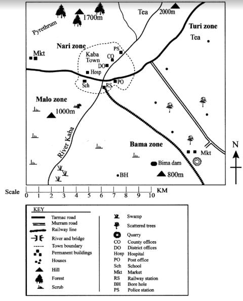
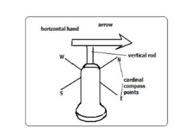
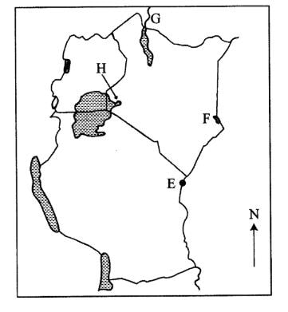
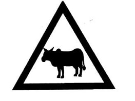
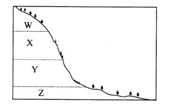

Part I: Social Studies
KABA AREA

1. The general direction of flow of River Kaba is
2. The following activities are carried out in Kaba area except
3. The main natural vegetation in the southern part of Kaba area is
4. The highest point in Kaba area is
5. The main source of water for Kaba town is a
6. A trader in Kaba market can obtain a trading licence from the
7. The approximate length of the railway line shown on the map is
8. Below are facts about a traditional form of government in Africa.
(i) It was ruled by chiefs.
(ii) The people lived in villages.
(iii) Villages formed chiefdom.
(iv) Leadership was hereditary.
The form of government described above was that of the
9. Which one of the following is a responsibility of children in a family?
10. Lake Victoria was formed as a result of
11. Three of the following are Cushitic speaking groups. Which one is not?
12. Three of the following statements are true about the importance of the institution of marriage. Which one is not?
13. Below are statements describing some activities of the early human beings. They
(i) made simple stone tools.
(ii) used gestures to communicate.
(iii) ate raw food.
(iv) lived in small groups.
Which one of the following early human beings are associated with the above activities?
14. William Mackinon, one of the early visitors to Eastern Africa, came as
15. In subsistence farming, crops are mainly grown for
16. In traditional African society, one of the functions of the clan was to
17. The diagram below shows a weather measuring instrument

18. Flowers are transported to the foreign markets by air, because air transport is
19. Which one of the following statements best describes the importance of peace? It promotes
20. The rightful person to inherit family property is
21. Which one of the following is the main reason for european scramble for Africa?

22. The Port marked E is
23. The National Game Reserve marked F is
24. The river marked G is river
25. The Nilotic group of people that migrated into Kenya using the route marked H was the
26. Which one of the following is the main economic activity in the semi arid areas of Kenya?
27. Below are characteristics of a type of vegetation in Africa.
(i) Tall grass.
(ii) Scattered trees.
(m) Deep roots.
(iv) Tiny leaves.
The type of vegetation described above is the
28. Which one of the following was the main reason for the formation of lnter Govemmental Authority on Development (IGAD)?
29. Three of the following are conditions under which citizenship can be revoked in Kenya. Which one is not?
30. Which one of the following is a cause of conflict in a society?
31. The main factor influencing population distribution in Africa is
32. Which one of the following methods is used to mine copper in Zambia?
33. One of the ways in which African communities interacted in the past was through
34. Which one of the following is a form of indirect democracy. The people
35. 35.The following are statements about a leader in Africa.
(i) He is a champion of Pan Africanism.
(ii) He led his country to independence in 1957.
(iii) He was among the O.A.U. founders.
(iv) He was overthrown by the army.
The leader described above is
36. The diagram below shows a road sign. The road sign represented by the diagram below is

37. Which one of the following is the most likely cause of lawlessness in a society?
38. Which one of the following crops was grown mainly by the white settlers?
39. Which one of the following statements is true about Nakuru town? It is
40. Which one of the following factors is likely to cause climate change in a given area?
41. Which one of the following groups of prehistoric sites are found in Kenya?
42. Which one of the following countries in Africa is not a member of Economic Community of WestAfrica States (ECOWAS)?
43. Below are problems facing livestock farming in Eastern Africa.
(i) Pest and diseases.
(ii) Overstocking.
(iii) High cost of feeds.
(iv) Inadequate market.
(v) Shortage of water.
Which one of the following combinations of problems listed above are faced in livestock farming in both Kenya and Tanzania?
44. Below are some uses of a mineral. It is used
(i) to run engines
(ii) for cooking oil
(iii) for making Plastics
The mineral described above is
45. Anita bought an exercise book. Later she found that two books had been packed. She returned the extra book to the shopkeeper. Anita showed
46. The diagram below snows sections of a slope marked W, X. Y and Z.

47. Which one of the following is the most effective Way of conserving forest in Kenya?
48. The population structure of India is similar to that of Africa in that
49. Which one of the following is true about tourism in Kenya?
50. Which one of the following statements best explains why the Volta river project was established?
51. The following are roles played by the legislative council in the struggle for independence in Kenya except
52. Which one of the following statements describes negotiation as a way of resolving conflicts in a society?
53. Below are statements of an organisation in Africa.
[i] it was formed in 1967.
(ii) lt provided common services to member countries.
(iii) It collapsed in 1977.
The organisation described above is
54. One of the roles of opposition parties in a democracy is to
55. Which one of the following industries in Kenya is correctly matched with its product?
Type of Industry - Product
56. Which one of the following explains why citizens participate in voting?
57. Meda has poor eyesight. He is not allowed to play with his age mates by his parents. Which one of the following freedom is Meda denied?
58. Who among the following African leaders was a founder member of Kenya African National Union (KANU)?
59. In Kenya, the National Police Service is headed by the
60. In Kenya, the speaker of the senate is
RELIGIOUS EDUCATION
Part II: Religious Education
Section A
Christian Religious Education
6l. God put Adam and Eve in the garden of Eden in order to
62. During the time of Noah God punished people for their wickedness by use of
63. Joseph restored good relationship with his brothers while in Egypt mainly by
64. God called Moses while he was taking care of Jethro’s flock in the wilderness in order to send him to
65. Which one of the following acts of worship was performed by the Israelites immediately after they crossed the Red Sea?
66. Saul was rejected by God as the King of Israel because he
67. Which one of the following activities was an achievement of David as a king of Israel?
68. Who among the following people was the mother of Prophet Samuel?
69. Who among the following prophets foretold about the making of the new covenant?
70. “Go and make a careful search for the child and when you find him, let me know so that I too may go and worship him.” (Matthew 2: 8).
These Words were spoken by King Herod to
71. When baby Jesus was presented in the temple for dedication Simeon described Him as the
72. “Do not put the Lord your God to the test." (Luke 4:12). These words were spoken by Jesus during
73. Which one of the following statements is a teaching of Jesus during the sermon on the mount?
74. The parable of Jesus which teaches Christians to pray always is the parable of the
75. A lesson Christians learn from the miracle of the feeding of the five thousand is that they should be
76. During the last supper Jesus washed the feet of His disciples because He wanted to
77. “Do you love me? take care of my sheep.” (John 21:17) These words were spoken by Jesus after His resurrection to
78. Which one of the following events took place on the day of Pentecost? The believers were
79. Annanias and Sapphira died because they
80. Saul was converted to become a Christian on his way to Damascus in order to
81. Which one of the following set contains the gifts of the Holy Spirit?
82. A belief about God that is common to both Christianity and traditional African religion is that God:
83. Which one of the following is a rite of passage in traditional African communities?
84. Elders are respected in traditional African communities mainly because of their
85. Christians in Kenya are encouraged to overcome ethnic differences mainly to
86. Your desk mate Irene has not been performing well in her studies and her parents are no longer willing to buy revision materials for her. As a Christian what is the best action for you to take?
87. You notice that Ezekiel who is a Standard Four pupil misses school every Friday to take care of their cattle. As a Christian, what is the best advice for you to give him? Tell him to
88. Which one of the following activities would be the best use of leisure by a Christian youth?
89. On your way from school, you find your friend Stella fighting with another girl. As a Christian what is the best action for you to take?
90. You learn that Daniel who is a Standard Six pupil sneaks from school and goes to take alcohol. As a Christian, what is the best advice for you to give him? Tell him
SECTION B
ISLAMIC RELIGIOUS EDUCATION
61. Which one of the following Surahs condemns those who do good deeds for the purpose of showing off?
62. Surah Al Ikhlas teaches Muslims on
63. Muslims are urged to seek refuge in Allah from the evil that He has created in Surah.
64. Which one of the following is a teaching from Surah At- Tiin?
65. Which one of the following Surah should a Muslim refer to on the treatment of beggars?
66. Which among the following is the correct manner of eating according to the Hadith of the Prophet (P.b.u.h)
67. According to the Hadith of the Prophet (P.b.u.h), the best action to take afier committing a bad deed is to
68. A Sunnah act in the performance of wudhu is
69. Which among the following acts nullifies wudhu?
70. The best reason why Muslims should observe sunnah saum is because it
71. Which among the following acts is not a nullifier of swalat?
72. Ali‘s father is seeking advice on what he should do before he travels for Hajj. Which of the following is the correct advice to Ali’s father? He should
73. The phrase “lahaula wala quwata ila billah” is said when a Muslim is
74. The most effective way of controlling the spread of HIV/AIDS is through
75. Your classmate Ahmad has a habit of reporting late to school. As a Muslim, the best action for you to take is to
76. Which among the following scriptures was revealed to Nabi Ibrahim?
77. The best way to show appreciation for the gift of wealth is by
78. Which one of the following is a miracle of Nabi Musa?
79. The correct order of the events of the Day of judgment is
80. Fatma, a Standard Two pupil was playing with her friend Aisha and heard her swearing by the name of her mother. Fatma should advice Aisha to swear by
81. A dua that is said when a Muslim encounters a disabled person is:
82. Who among the following people engages in a lawful source of earning?
83. The similarity between the battles of Badr and Khandaq is that
84. A lesson that Muslims learn from the battle of Uhud is that
85. The first mosque to be built by the Prophet (P.b.u.h) was
86. Below are events that took place during the lifetime of the Prophet (P.b.u.h)
(i) death of the Prophet’s mother
(ii) journey to Syria with Abu Talib
(iii) marriage to Bibi Khadija
(iv) death of Abdul Muttalib
The correct order of the above events is
87. Muslims consider Friday as an important day because it
88. Which among the following acts is recommended during Idd-ul-fitr?
89. The reason why Qabeel killed his brother Habeel is because:
90. Who among the following Prophets was ordered by Allah to migrate from his homeland to the desert?
SECTION C
HINDU RELIGIOUS EDUCATION
61. Lord Krishna was referred by his devotee Saint Tukaram as
62. Hindus worship the five elements because it is
63. Which one of the following combinations of jewels are prescribed by Lord Mahavir?
64. Guru Teghbahadurji saved Makhan Shah’s ship from drowning. Makhan Shah promised to offer him
65. “The root cause of suffering is the desire and attachment to worldly things." These words were said by
66. Sitaji accompanied Lord Rama during his vanvas mainly because
67. Sazyarth Prakash teaches us that in Vanprastha Ashram a person should
68. Which one of the following Autars is correctly matched with his consort?
69. Satyem a Standard Six pupil was asked to tell the best religion in the world. He responded that all religions are good. Which principle did he practice?
70. Which one of the following is the reason why llindus are advised against getting angry?
71. The principle of Aparigraha leads us towards
72. Which one of the Following principles of Dharma leads us to attain Moksha?
73. When preparing for KCPE examination, the candidates are required to follow the principle of
74. The two principles that propagate vegeterianism are
75. Which one of the following religious symbols has a crescent and three dots?
76. Which one of the following scriptures are read continuously?
77. The correct order that lS observed while Conducting char Dham yatra is
78. Golden temple in Amvitsar has four doors in all four directions because
Which one ofthe following Sikh Gurus was released from jail on Diwali? Guru
80. The Utsav that is correctly matched with the Autar is
Utsav - Autar
81. The correct order in which Prashad is offered to Paramatma during Varsha Pratipad is?
82. Surya Namaskar is practised in the morning facing the sun mainly because it
83. 83. Which one of the following is the main reason why Lord Vitthal accepted naivedya of milk from child Namdev? Because Namdev
84. Paresh a Standard Six pupil had a discipline problem. His teacher advised him to practice yoga to be obedient Which one of the following Yoga should Paresh practice?
85. Which one ofthe following episodes from Mahabharat shows the action of Sadachar?
86. According to Hindus a guest is supposed to be treated as
87. Nina a Standard Five pupil has been missing school because of lack of food. Her classmate offered to be sharing the food with her. Which one of the following Sadachar is demonstrated by Nina's classmates?
88. Eklavya obeyed Guru Dronacharya when he ordered him to cut his eight hand thumb, to him Guru Dronacharya was
89. According to Hindu calender Adhik maas occurs after
90. The Himalayan range situated in the northern area of lndia is famous mainly because